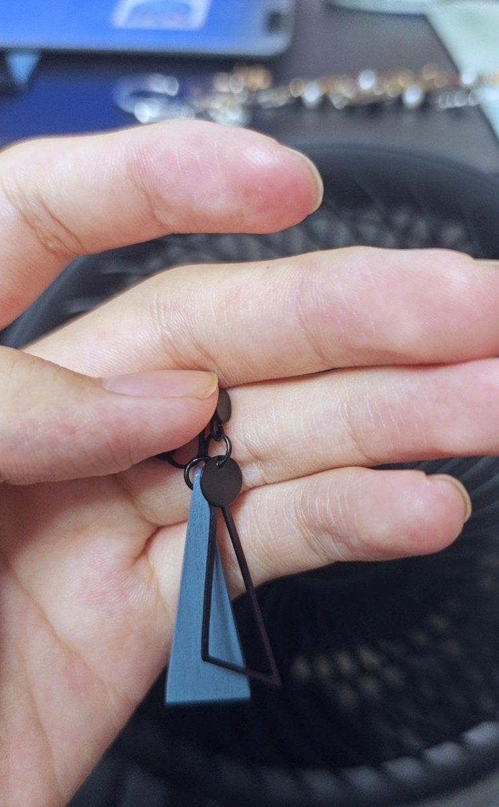

梣🍂
@wwwsgry_
@hy1194527 我草宝宝原来你长这样，怎么没有早点发照片给我，之前没回你消息是因为我出车祸了，现在我病好了，我们重新来聊天吧，我觉得你长得挺可爱的。就是说真的长得好漂亮好漂亮，怎么能这么美呀，就是眼睛真的就是很大很圆，然后感觉眼睛里面有星星一样，真的特别特别的让人喜欢，而且特别特别的漂亮好吗？

Sparky Himlevich Shoemaker🇪🇪🇰🇿🇺🇿🇷🇺🇵🇱
@hy1194527
确实挺不错的。 https://t.co/M41LTyUuhb